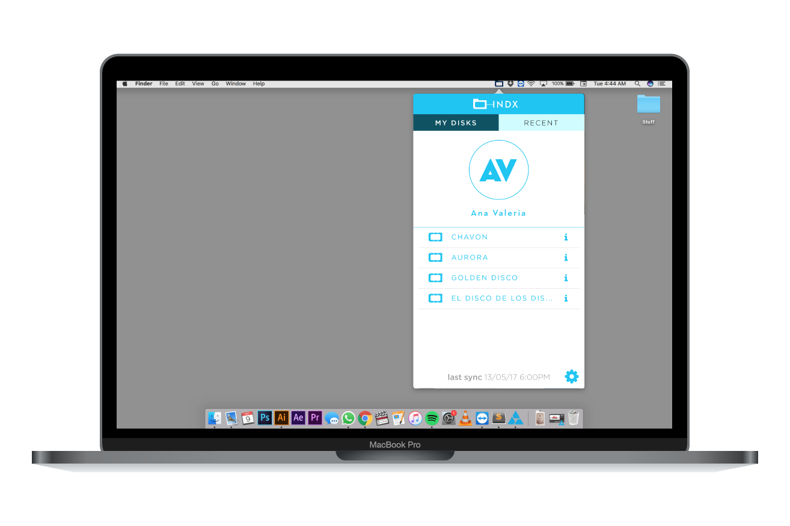
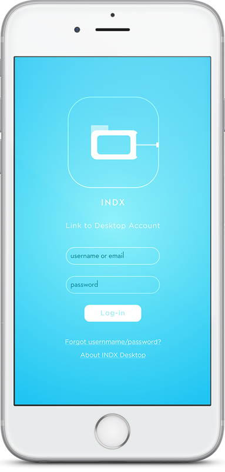
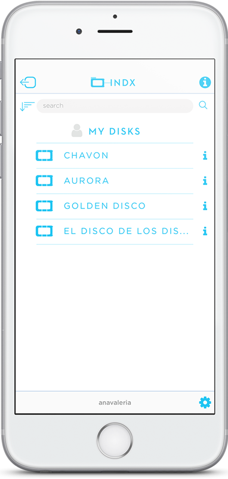

About INDX
INDX knows your external hard drives inside-out, so you won’t have to...As an recorder of your drives’ metadata, INDX gives you access to the nature of their contents without the need to have the disk in question at hand and up-and-running. Don’t know where to look? Use the search bar to dig into all similar results present in your drive collection. The days of wondering where that missing link went are not gone...though now you have someone to ask.
Desktop App

Accesible through the menu bar, INDX runs in the background to ensure your disks are always up to date.
Your indexing partner, now at hand.

